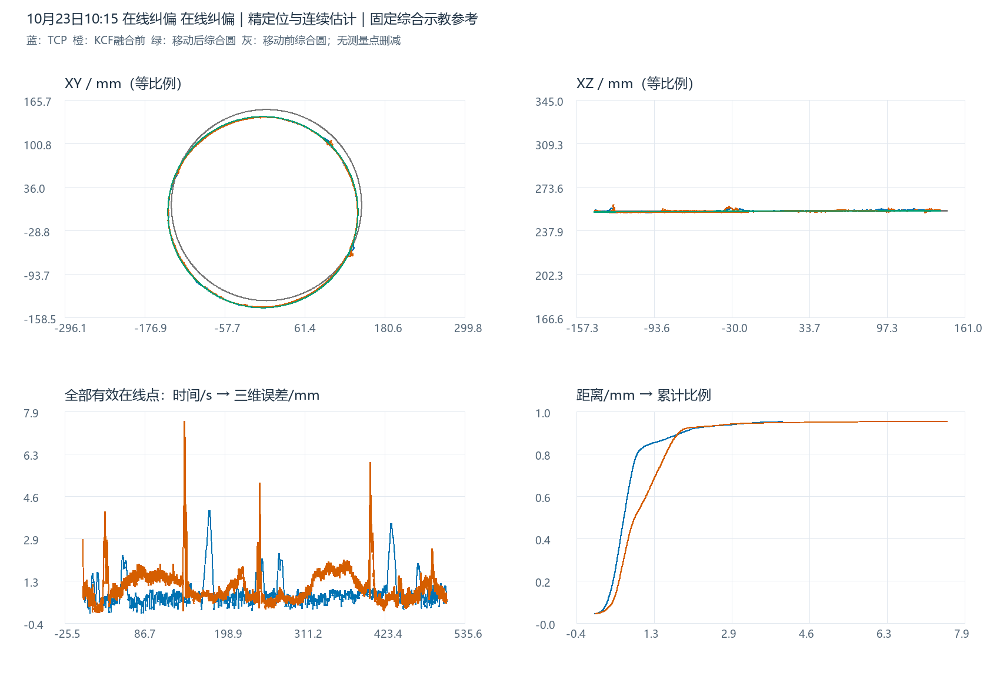
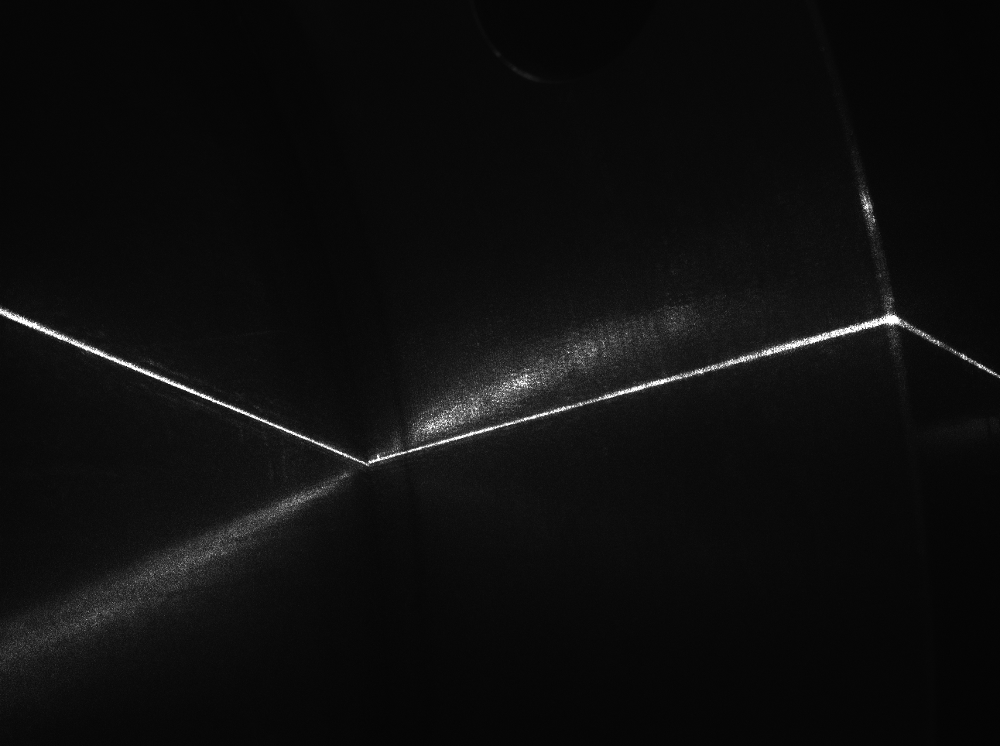
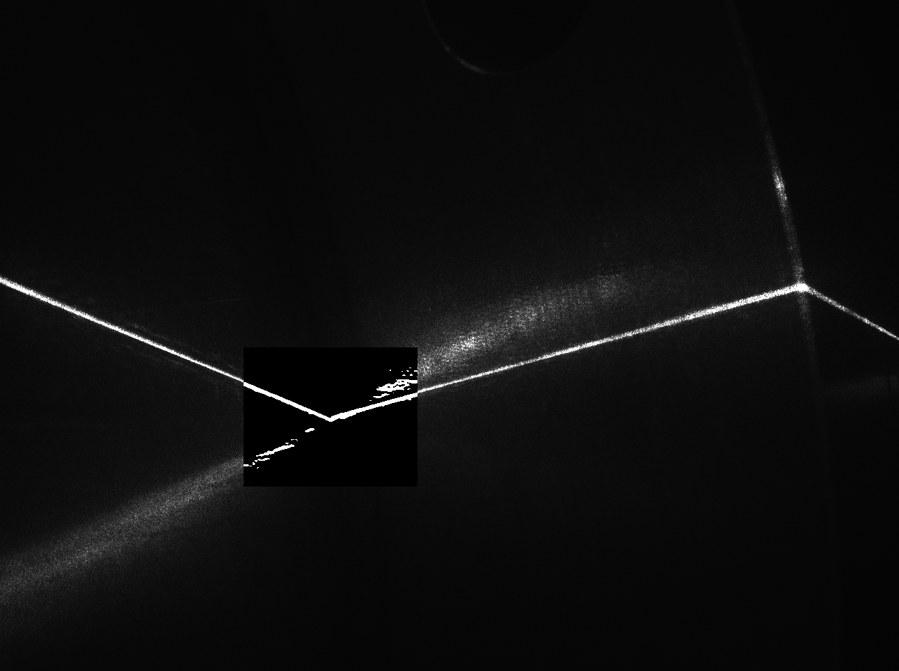
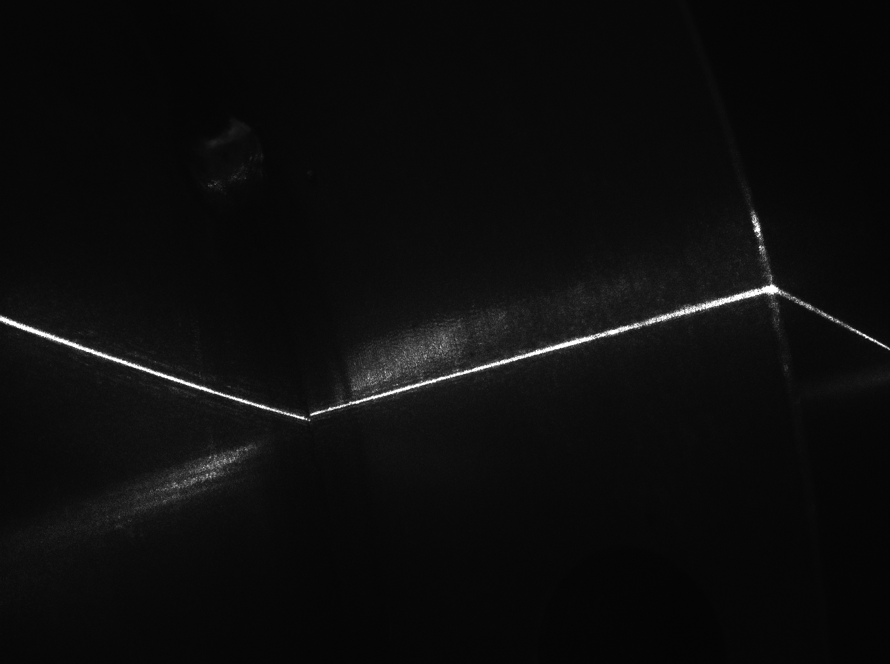
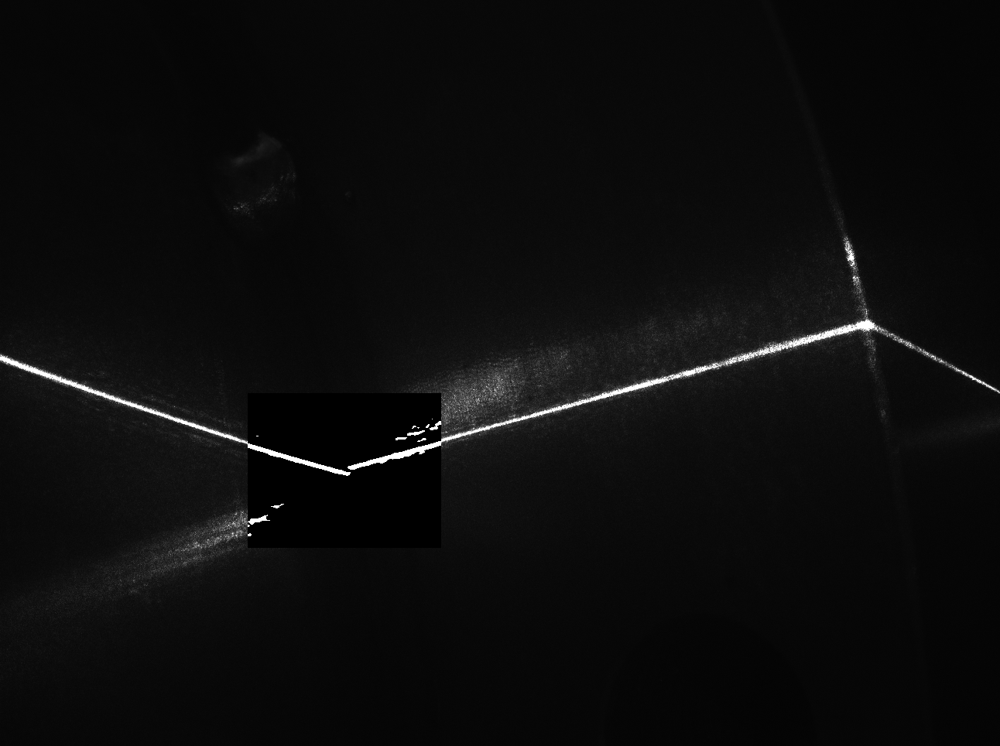

最新在线纠偏误差分析
与刚体移动后的综合原始示教轨迹对比
终态：日志记录“在线纠偏在终态前被复位”，不能视为正常完整结束。在线运行与等待机器人停止时段分开，主统计不混入启动和停止等待记录。
1. 数据、参考和坐标口径
机器人原始6659条、视觉诊断7107条。TCP保留online_running、CORFLAG=DETFLAG=S_START=1、S_HOLD=ALARM=0共5791点；视觉保留online_running且result_valid=1共6888点。保留全部有效测量/输出点及峰值，不采用上次事后剔除口径。
此前四组去重历史示教各25%综合，半径固定142.035339635 mm。本组仅用before_fusion粗KCF的三维点估计圆心和法线：初拟合后每2°取坐标中位数代表点，SVD拟合平面、最小二乘初始化圆、稳健迭代细化；再将综合原始示教圆刚体旋转和平移到该圆心/法线。不缩放，不用TCP和最终视觉优化参考，绕法线相位取最小旋转约定。全部有效点仍参与误差统计。
参考位姿由本轮粗KCF事后估计，会吸收整体位姿偏差；它不是独立真实焊缝测量。统一到变位机末节随动材料系，机器人经RBCALIB变换、逐点消除Ry(S1)Rz(S2)；视觉按同帧姿态标定投影，工具TCP系加Z=231 mm。换坐标原点不改半径和误差。当前标定复算吻合不等于历史绝对标定得到独立验证。
| 阶段 | 点数 | 北京时间起 | 北京时间止 |
|---|---|---|---|
| idle | 345 | 10-23 10:15:47.732 | 10-23 10:16:25.249 |
| initial_detection_running | 151 | 10-23 10:16:25.345 | 10-23 10:16:41.756 |
| sending_initial_teach_points | 5 | 10-23 10:16:42.262 | 10-23 10:16:42.297 |
| waiting_initial_teach_point_ack | 4 | 10-23 10:16:42.533 | 10-23 10:16:43.230 |
| waiting_initial_approach | 131 | 10-23 10:16:43.459 | 10-23 10:16:57.662 |
| waiting_online_start | 1 | 10-23 10:16:57.812 | 10-23 10:16:57.812 |
| online_running | 5792 | 10-23 10:16:57.935 | 10-23 10:25:28.017 |
| segment_finishing | 1 | 10-23 10:25:28.124 | 10-23 10:25:28.124 |
| waiting_detection_reset | 1 | 10-23 10:25:28.232 | 10-23 10:25:28.232 |
| waiting_robot_program_stop | 228 | 10-23 10:25:28.300 | 10-23 10:25:53.104 |
2. 空间轨迹与XYZ偏差
蓝TCP、橙融合前粗KCF、灰虚线移动前综合示教、绿移动后综合参考，紫最终业务视觉可从图例打开。支持三维、XY/XZ/YZ、Z显示倍率和两组示教独立切换。生成W点是综合圆采样，不是新实测点。倍率只改显示。

3. 示教来源及参考移动参数
| 历史示教 | W点数 | 拟合半径/mm | 综合权重 |
|---|---|---|---|
| 20230608CHUFENGKOU | 1687 | 140.6477 | 25% |
| 20250606CHUFENGKOU | 1663 | 141.6920 | 25% |
| 20260308CHUFENGKOU | 1355 | 142.0846 | 25% |
| 20260404CHUFENGKOU1 | 1368 | 143.7170 | 25% |
| 圆 | 圆心X/mm | 圆心Y/mm | 圆心Z/mm | 半径/mm | 单位法线 |
|---|---|---|---|---|---|
| 固定综合原始示教（移动前） | 4.4924 | 8.9094 | 253.9076 | 142.0353 | -0.000832582, 0.001575923, 0.999998412 |
| 移动后综合示教参考 | -0.7909 | -1.6419 | 253.6956 | 142.0353 | -0.003327716, 0.001305481, 0.999993611 |
| TCP 实际轨迹拟合圆 | -0.7335 | -1.7641 | 253.9174 | 141.5559 | -0.003622877, 0.001588525, 0.999992176 |
| KCF 原始检测拟合圆 | -0.7909 | -1.6419 | 253.6956 | 141.1628 | -0.003327716, 0.001305481, 0.999993611 |
| 最终业务视觉拟合圆 | -0.7123 | -1.7208 | 253.9262 | 141.5035 | -0.003395025, 0.001720039, 0.999992758 |
轨迹拟合圆仅作描述，所有原始点保留。变换矩阵见teach_to_current_transform.csv，原始综合圆与移动后圆分别保存供复核。
4. 全量误差
| 轨迹 | 点数 | 平均/mm | 最大/mm | RMSE/mm | P95/mm | ≤2 mm | ≤3 mm | >3 mm点数 |
|---|---|---|---|---|---|---|---|---|
| TCP 实际轨迹 | 5791 | 0.7817 | 4.0338 | 0.9631 | 1.9823 | 95.16% | 98.39% | 93 |
| KCF 原始检测 | 6888 | 1.0440 | 7.5434 | 1.2200 | 1.8642 | 96.47% | 98.75% | 86 |
| 最终业务视觉 | 6888 | 0.7782 | 7.2842 | 1.0522 | 1.8094 | 95.92% | 97.71% | 158 |
h=(p-c)·n；ρ=||(p-c)-h n||；e=√((ρ-R)²+h²) 平均=mean(e)；RMSE=√mean(e²)；XYZ偏差=测量点−连续圆最近点
解析连续三维圆距离，按记录样本加权，不按弧长重加权。3 mm仅为描述阈值。XYZ偏差不是机器人与视觉同焊点时序配对偏差。
| 轨迹 | 径向有符号均值/mm | 径向RMSE/mm | 离面有符号均值/mm | 离面RMSE/mm | ΔX RMSE/mm | ΔY RMSE/mm | ΔZ RMSE/mm |
|---|---|---|---|---|---|---|---|
| TCP 实际轨迹 | -0.4081 | 0.8155 | 0.2293 | 0.5123 | 0.6695 | 0.4652 | 0.5127 |
| KCF 原始检测 | -0.8265 | 1.0917 | 0.0139 | 0.5446 | 0.7732 | 0.7706 | 0.5447 |
| 最终业务视觉 | -0.4347 | 0.9266 | 0.2392 | 0.4987 | 0.7832 | 0.4947 | 0.4991 |
| 轨迹 | 时段 | 点数 | 平均/mm | RMSE/mm | 最大/mm | >3 mm点数 |
|---|---|---|---|---|---|---|
| TCP 实际轨迹 | 前60秒 | 675 | 0.7490 | 0.9105 | 2.2965 | 0 |
| TCP 实际轨迹 | 60秒以后 | 5116 | 0.7860 | 0.9698 | 4.0338 | 93 |
| KCF 原始检测 | 前60秒 | 784 | 0.8919 | 1.1129 | 3.9904 | 8 |
| KCF 原始检测 | 60秒以后 | 6104 | 1.0636 | 1.2331 | 7.5434 | 78 |
| 最终业务视觉 | 前60秒 | 784 | 0.6888 | 0.8981 | 2.3295 | 0 |
| 最终业务视觉 | 60秒以后 | 6104 | 0.7897 | 1.0704 | 7.2842 | 158 |
| 轨迹 | 开始 | 结束 | 点数 | 最大/mm | 峰值径向/mm | 峰值离面/mm |
|---|---|---|---|---|---|---|
| KCF 原始检测 | 10-23 10:19:19.235 | 10-23 10:19:20.720 | 22 | 7.5434 | 7.4413 | 1.2366 |
| 最终业务视觉 | 10-23 10:19:19.235 | 10-23 10:19:26.132 | 100 | 7.2842 | 7.2842 | 0.0120 |
| KCF 原始检测 | 10-23 10:19:20.885 | 10-23 10:19:21.016 | 3 | 6.9260 | 6.7796 | 1.4162 |
| KCF 原始检测 | 10-23 10:19:21.116 | 10-23 10:19:21.116 | 1 | 6.7912 | 6.6846 | 1.1981 |
| KCF 原始检测 | 10-23 10:19:21.380 | 10-23 10:19:21.446 | 3 | 6.2176 | 6.0981 | 1.2130 |
| KCF 原始检测 | 10-23 10:23:40.624 | 10-23 10:23:42.242 | 24 | 5.9371 | -0.6386 | 5.9026 |
| KCF 原始检测 | 10-23 10:21:05.989 | 10-23 10:21:06.450 | 7 | 5.1321 | 5.1188 | 0.3691 |
| KCF 原始检测 | 10-23 10:19:21.248 | 10-23 10:19:21.248 | 1 | 4.9805 | 4.9785 | 0.1415 |
| 最终业务视觉 | 10-23 10:23:40.723 | 10-23 10:23:44.750 | 58 | 4.2815 | -2.0078 | 3.7816 |
| KCF 原始检测 | 10-23 10:23:40.426 | 10-23 10:23:40.426 | 1 | 4.2395 | -1.4856 | 3.9706 |
| KCF 原始检测 | 10-23 10:21:05.823 | 10-23 10:21:05.823 | 1 | 4.2176 | 4.1841 | 0.5303 |
| TCP 实际轨迹 | 10-23 10:19:52.890 | 10-23 10:19:57.446 | 53 | 4.0338 | 4.0330 | -0.0792 |
| KCF 原始检测 | 10-23 10:17:28.488 | 10-23 10:17:28.488 | 1 | 3.9904 | -0.3280 | 3.9769 |
| KCF 原始检测 | 10-23 10:19:22.172 | 10-23 10:19:22.370 | 5 | 3.9621 | 3.9497 | 0.3131 |
| TCP 实际轨迹 | 10-23 10:24:09.206 | 10-23 10:24:12.566 | 40 | 3.5290 | -2.3746 | 2.6106 |
TCP峰值10-23 10:19:55.318；粗KCF峰值10-23 10:19:20.620；最终视觉峰值10-23 10:19:21.116。峰值事件按连续超3 mm记录归组、时间间隔超过200 ms拆分，不从峰值时间接近直接推断因果。
5. 新版视觉来源、阶段与异常段
| 来源枚举 | 点数 | 平均/mm | RMSE/mm | 最大/mm | 超3mm |
|---|---|---|---|---|---|
| Geometry | 4061 | 0.6613 | 0.7474 | 5.9349 | 18 |
| CorrectedKcf | 2308 | 0.6531 | 0.7492 | 5.6355 | 12 |
| SimulationPrediction | 310 | 2.4305 | 2.8396 | 7.0618 | 84 |
| GuidedEstimate | 209 | 1.9804 | 2.7346 | 7.2842 | 44 |
来源1几何精定位；2校正KCF估计；3沿用SimulationPrediction枚举；4原图肩部/时序辅助估计。新版图像连续链路已变化，来源3名称本身不足以证明当前仿真点拉动输出。guided_valid不等于独立原图精定位有效；raw_geometry_valid和geometry_valid也代表不同阶段。estimated共2827点，transition_limited共365点。来源指标覆盖不同时间/位置，不作受控因果比较。
| 记录标志 | 有效在线帧数 |
|---|---|
| guided_valid | 6888 |
| guided_reacquisition_pending | 26 |
| guided_reacquired | 2 |
| guided_reacquisition_blocked_previous_branch | 57 |
| guided_image_continuity_active | 6888 |
| guided_model_translation_suppressed | 6887 |
| kcf_training_deferred | 6888 |
| kcf_training_committed | 2481 |
| kcf_real_search_fallback_used | 20 |
| coarse_observation_used | 2308 |
| raw_geometry_valid | 4339 |
| online_observation_fusion_enabled | 6888 |
在线位姿版本：[1, 2, 3, 4, 5, 6, 7, 8, 9, 10, 11, 12, 13, 14, 15, 16, 17, 18, 19, 20, 21, 22, 23, 24, 25, 26, 27, 28]。下表是同帧阶段比较，不把fusion_applied直接解释为最终业务输出只经过卡尔曼。粗融合RMSE可能变大，几何与最终业务输出需分别检查。
| 同帧阶段 | 点数 | 前RMSE/mm | 后RMSE/mm | 偏差减少 | 偏差增加 |
|---|---|---|---|---|---|
| raw_to_coarse | 6888 | 1.2200 | 1.2411 | 2280 | 4605 |
| raw_to_geometry | 4061 | 1.1888 | 0.6669 | 3527 | 534 |
| geometry_to_final | 4061 | 0.6669 | 0.7474 | 441 | 3619 |
| raw_to_final | 6888 | 1.2200 | 1.0522 | 5179 | 1709 |
打开输出来源全量误差时间图。以下为较长的来源3/4连续段；跨度不含下一帧间隔，完整表保留。
| 来源 | 开始 | 结束 | 点数 | 首末跨度/ms | 最大/mm |
|---|---|---|---|---|---|
| 3 | 10-23 10:21:06.616 | 10-23 10:21:09.453 | 41 | 2837 | 2.1835 |
| 3 | 10-23 10:23:41.119 | 10-23 10:23:43.397 | 36 | 2278 | 4.1854 |
| 3 | 10-23 10:17:28.686 | 10-23 10:17:30.865 | 35 | 2179 | 2.2396 |
| 3 | 10-23 10:17:30.996 | 10-23 10:17:32.415 | 22 | 1419 | 2.3047 |
| 4 | 10-23 10:23:39.734 | 10-23 10:23:40.723 | 13 | 989 | 3.0652 |
| 4 | 10-23 10:19:18.377 | 10-23 10:19:19.235 | 11 | 858 | 3.0644 |
| 4 | 10-23 10:17:15.387 | 10-23 10:17:16.213 | 13 | 826 | 0.4635 |
| 4 | 10-23 10:19:19.400 | 10-23 10:19:20.191 | 11 | 791 | 5.3799 |
| 3 | 10-23 10:19:24.218 | 10-23 10:19:24.911 | 11 | 693 | 6.1173 |
| 3 | 10-23 10:23:45.673 | 10-23 10:23:46.334 | 10 | 661 | 1.7296 |
| 3 | 10-23 10:25:12.397 | 10-23 10:25:13.057 | 11 | 660 | 1.0462 |
| 3 | 10-23 10:19:23.129 | 10-23 10:19:23.756 | 10 | 627 | 4.7810 |
最终视觉峰值同帧诊断：
{
"frame_id": 6891,
"point_source": 4,
"geometry_valid": 0,
"raw_geometry_valid": 0,
"guided_valid": 1,
"guided_reacquisition_pending": 0,
"guided_reacquired": 0,
"guided_anchor_age_ms": 3544,
"guided_model_translation_suppressed": 1,
"workpiece_pose_revision": 4
}峰值帧的标志只能解释当时采用何种输出，不能代替该帧图像确认真实接缝位置。
6. 局部表面ICP与事务结果
| 候选 | 候选通过 | 写回记录 | 通过后验记录 | 新帧后验成功 | 通过后验回滚标志 |
|---|---|---|---|---|---|
| 60 | 27 | 27 | 9 | 9 | 0 |
归档 20261023_021547_636_session_1（UTC式目录时间，实际帧时间核对）。schema4局部候选60份，其中surface_only=58。候选通过27、写回27；新帧后验verified仅9份，另有18份retained_without_geometric_verification记录。保留表示未回滚及位姿读回保留，不能算后验几何通过，即使某些记录succeeded或verified_by_independent_observation为true，也需按phase和current_pose_geometrically_verified判断。
基础安全通过29、拒绝31；稳定保护实际评估22份、拒绝2份。表面模式与焊点模式入口不同，不能要求所有接受候选都进入同一个稳定评估，也不能用候选数代表效果。历史仅监测的评估22份，其中8份记录历史区域冲突；候选预测不等于写回后实测退化。
| 记录类型 | 事务阶段 | 验证类型 | 当前位姿几何确认 | 未通过几何仍保留 | 位姿版本 |
|---|---|---|---|---|---|
| retained | retained | fresh_raw_surface | False | True | 10 |
| writeback | writeback | fresh_raw_surface | False | False | 10 |
| verified | verified | fresh_raw_surface | True | False | 11 |
| writeback | writeback | fresh_raw_surface | False | False | 11 |
| retained | retained | fresh_raw_surface | False | True | 12 |
| writeback | writeback | fresh_raw_surface | False | False | 12 |
| retained | retained | fresh_raw_surface | False | True | 13 |
| writeback | writeback | fresh_raw_surface | False | False | 13 |
| verified | verified | fresh_raw_surface | True | False | 14 |
| writeback | writeback | fresh_raw_surface | False | False | 14 |
| verified | verified | fresh_raw_surface | True | False | 15 |
| writeback | writeback | fresh_raw_surface | False | False | 15 |
| verified | verified | fresh_raw_surface | True | False | 16 |
| writeback | writeback | fresh_raw_surface | False | False | 16 |
| verified | verified | fresh_raw_surface | True | False | 17 |
完整事务CSV区分writeback/verified/retained。新帧验证类型以fresh_raw_surface记录为准，不能继续称为旧版KCF焊点验收。融合前几何焊点可重放358帧，最大差1.15e-07 mm，仅证明这些记录的投影一致。相机、标定共享，在线新帧验收不是外部真值精度认证。
另有轨迹预测ICP 3046批、171批应用；释放目标对同批待处理折线最大距离0.536 mm。这些与修改工件位姿的局部表面ICP、TCP对综合参考偏差是不同指标。
7. 峰值附近已保存图像
保存28对图像，覆盖10-23 10:16:25.261至10-23 10:25:01.308。最近图像非零时间差不称为峰值同帧图，不能凭邻近图断定峰值原因；无图时保留证据缺口。
| 轨迹 | 峰值时刻 | 峰值/mm | 最近保存图时刻 | 图减峰值/ms |
|---|---|---|---|---|
| TCP 实际轨迹 | 10-23 10:19:55.318 | 4.0338 | 10-23 10:20:01.111 | 5793 |
| KCF 原始检测 | 10-23 10:19:20.620 | 7.5434 | 10-23 10:19:03.461 | -17159 |
| 最终业务视觉 | 10-23 10:19:21.116 | 7.2842 | 10-23 10:19:03.461 | -17655 |




8. 历史同口径对照和敏感性
| 会话 | 轨迹 | 平均/mm | RMSE/mm | 最大/mm | 超3mm |
|---|---|---|---|---|---|
| 10-21 20:14 | TCP 实际轨迹 | 0.8292 | 0.9536 | 2.7835 | 0 |
| 10-21 20:14 | KCF 原始检测 | 0.7811 | 0.9336 | 6.5737 | 55 |
| 10-21 20:14 | 最终业务视觉 | 0.7810 | 0.9283 | 6.4393 | 46 |
| 10-21 23:52 | TCP 实际轨迹 | 0.8442 | 1.2317 | 4.8124 | 304 |
| 10-21 23:52 | KCF 原始检测 | 0.8261 | 1.0562 | 12.4837 | 63 |
| 10-21 23:52 | 最终业务视觉 | 0.7811 | 1.1929 | 4.7672 | 389 |
| 10-23 10:15 本轮 | TCP 实际轨迹 | 0.7817 | 0.9631 | 4.0338 | 93 |
| 10-23 10:15 本轮 | KCF 原始检测 | 1.0440 | 1.2200 | 7.5434 | 86 |
| 10-23 10:15 本轮 | 最终业务视觉 | 0.7782 | 1.0522 | 7.2842 | 158 |
各轮分别由本轮粗KCF估计同一固定综合圆的当前位置，环境与算法变化不受控。与上次相比TCP平均和RMSE降低、超3 mm点减少；最终视觉最大偏差由4.767升至7.284 mm。不能用均值或局部更新次数代替峰值和尾部分析。
本轮粗KCF周向覆盖约355.15°；交错20°扇区留出RMSE 1.229 mm，仍共享传感器标定偏差。历史示教留一组半径敏感性如下，主结果半径始终固定。
| 轨迹 | 留一组示教：平均范围/mm | RMSE范围/mm | 最大范围/mm |
|---|---|---|---|
| TCP 实际轨迹 | 0.585–1.128 | 0.886–1.232 | 3.855–4.594 |
| KCF 原始检测 | 0.684–1.452 | 0.936–1.571 | 7.087–8.097 |
9. 验证与建议
像素到固定站系日志复算最大差9.34e-07 mm，随动坐标复算最大差9.00e-07 mm。核对输入哈希、独立标量圆距离、逐点分量、同帧阶段、局部归档、图像来源及离线图控件。源码只辅助解释字段，缺少运行时完整版本快照；原始日志只读，生产代码未改动。
优先复查10:19:20–10:19:56附近的检测峰值、来源切换、精定位恢复与TCP峰值，结合原图判断是否错支系或辅助估计残留；其次检查18次未几何确认仍保留的位姿事务。需要受控重复运行和独立实物测量才能评价绝对精度。终态复位及停止等待行为另行核对。
复现依次运行analyze.py、build_report.py、verify_browser.cjs、verify.py。stage_analysis.py由主脚本执行。浏览器无鼠标DOM事件验证，未进行人工拖拽验收。